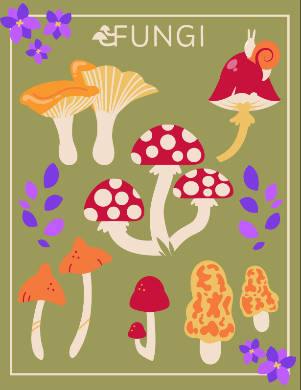
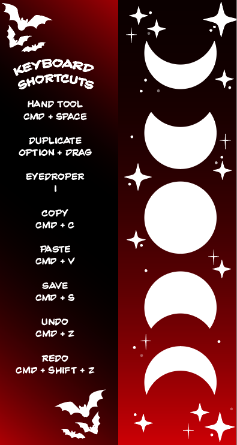
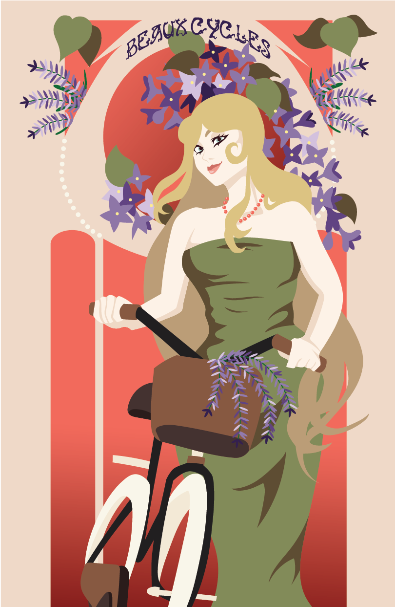

Independent Study
My first stained glass wallpaper design.

Logo
This design was my first-ever logo design for a fictional company I dubbed "Magic Lamps."
Illustrative Set
I loved this project! The fungi shapes were very fun to design.
Bookmark
My first bookmark design, themed for Halloween.
Art Nouveau Poster
Poster done in Adobe Illustrator inspired by the Art Nouveau era.
